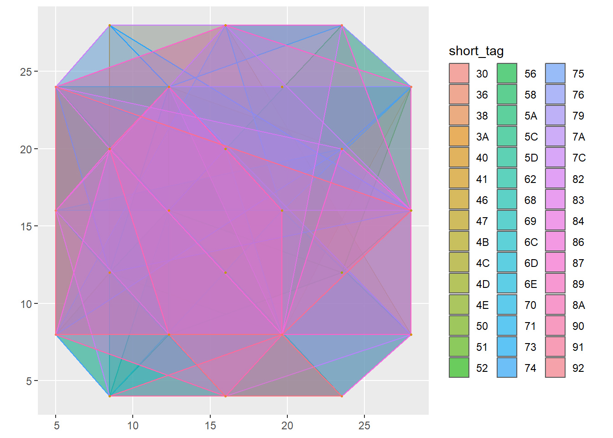
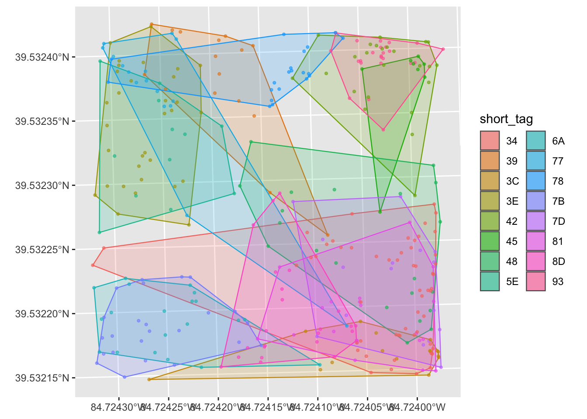
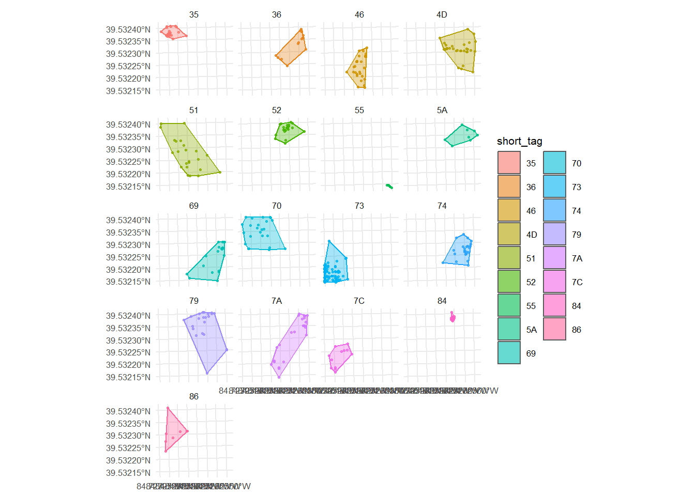
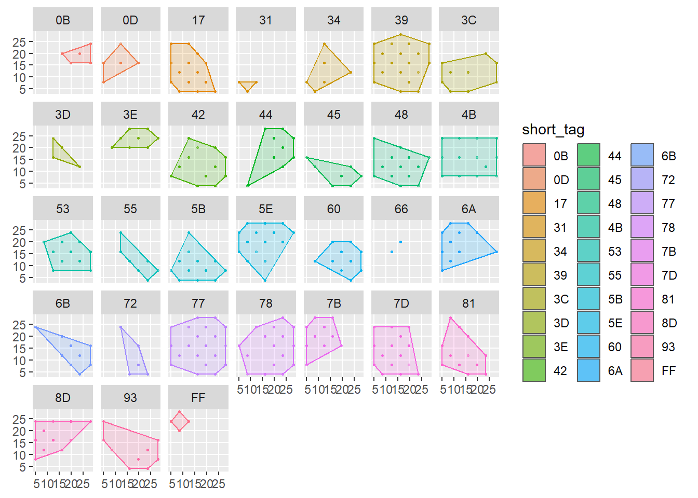

The prairie vole (Microtus ochrogaster) is socially monogamous, a reproductive strategy in which a bonded pair share a home range, engage in biparental care of their pups, and preferentially interact with each other compared to other conspecifics. Due to their stable pair bonds and overlapping home ranges, they are an ideal species to study social networks. However, prairie voles are fossorial (burrowing & residing primarily underground). Traditional field methods, such as live trapping & VHF radio, capture snapshots of vole movement, and as such are an incomplete picture of vole sociality. A social/biological network analysis is an ideal tool to discern vole individual associations, as well as the strength of those associations.
Social network analysis (SNA)
Social network analysis builds upon graph theory and is used to discern how individual connections can form group associations, or patterns.
There are 3 major components to SNA Nodes: individual elements of study (in our case, individual voles identified when their RFID tag is detected) Edges: relationships between individuals (“social interactions,” or voles passing through the same detector) Weight: strength of edges, calculated via Simple Ratio Index (RFID hit frequencies). Collectively, we can use this data to discern degree: the number of connections a vole has clustering: the emergence of vole “friend networks,” centrality: a vole’s importance to an overall network, and communities: social subgroups.
SNA enables researchers to go beyond the level of analysis via live trapping, nest co-location, and VHF radio telemetry; these 3 methods can only address a brief moment in time of a vole’s location. These methods are also limited by their ability to discern proximity, correlating vole movements to extrapolate pair bonded voles. However, these two voles could also merely have overlapping territories.
2. Description of dataset
Data from (Sabo, Solomon, & Dantzer, 2018) was available via Figshare
Step 1. Load packages
library(tidyverse)
Warning: package 'tidyverse' was built under R version 4.5.3
Warning: package 'ggplot2' was built under R version 4.5.3
Warning: package 'tibble' was built under R version 4.5.3
Warning: package 'tidyr' was built under R version 4.5.3
Warning: package 'readr' was built under R version 4.5.3
Warning: package 'purrr' was built under R version 4.5.3
Warning: package 'dplyr' was built under R version 4.5.3
Warning: package 'stringr' was built under R version 4.5.3
Warning: package 'forcats' was built under R version 4.5.3
Warning: package 'lubridate' was built under R version 4.5.3
── Attaching core tidyverse packages ──────────────────────── tidyverse 2.0.0 ──
✔ dplyr 1.2.1 ✔ readr 2.2.0
✔ forcats 1.0.1 ✔ stringr 1.6.0
✔ ggplot2 4.0.3 ✔ tibble 3.3.1
✔ lubridate 1.9.5 ✔ tidyr 1.3.2
✔ purrr 1.2.2
── Conflicts ────────────────────────────────────────── tidyverse_conflicts() ──
✖ dplyr::filter() masks stats::filter()
✖ dplyr::lag() masks stats::lag()
ℹ Use the conflicted package (<http://conflicted.r-lib.org/>) to force all conflicts to become errors
library(sf)
Warning: package 'sf' was built under R version 4.5.3
Linking to GEOS 3.14.1, GDAL 3.12.1, PROJ 9.7.1; sf_use_s2() is TRUE
library(lubridate)library(igraph)
Attaching package: 'igraph'
The following objects are masked from 'package:lubridate':
%--%, union
The following objects are masked from 'package:dplyr':
as_data_frame, groups, union
The following objects are masked from 'package:purrr':
compose, simplify
The following object is masked from 'package:tidyr':
crossing
The following object is masked from 'package:tibble':
as_data_frame
The following objects are masked from 'package:stats':
decompose, spectrum
The following object is masked from 'package:base':
union
library(asnipe)
Warning: package 'asnipe' was built under R version 4.5.3
HD_Range <-"data/HD_GPS.csv"# loading file stored in data folder.HD_Range <-read.csv(HD_Range, check.names =FALSE,stringsAsFactors =FALSE) |>rename(vole_id ="Vole ID",northing = Northing,easting = Easting) |>mutate(vole_id =trimws(vole_id)) # loading data as csv and then piping it into rename to change variable names for easier coding.UTM_EPSG <-32616# EPSG code used for region where study took place. Used for coordinate mapping in later steps.pointsH <-st_as_sf(HD_Range, coords =c("easting", "northing"), crs = UTM_EPSG) #converting the data set into a spatial object. st_as_sf converting into sf data model for spatial vectors. labeling which columns hold the coordinates with the crs being the coordinate reference system made in the previous line.#### Same process loading in the low density as done above.LD_Range <-"data/LD_GPS.csv"LD_Range <-read.csv(LD_Range, check.names =FALSE,stringsAsFactors =FALSE) |>rename(vole_id ="Vole ID",northing = Northing,easting = Easting) |>mutate(vole_id =trimws(vole_id))UTM_EPSG <-32616pointsL <-st_as_sf(LD_Range, coords =c("easting", "northing"), crs = UTM_EPSG)
HD_Range$short_tag <-substr(HD_Range$vole_id, nchar(HD_Range$vole_id) -1, nchar(HD_Range$vole_id)) # creating a short tag id column from the vole_id column with the nchar functions working to choose the last two characters of the long vole_id namesRanges_H <- HD_Range |>distinct(vole_id, short_tag, easting, northing, ) |>group_by(vole_id, short_tag) |>filter(n() >=3) |>summarise(geometry =st_combine(st_as_sf(tibble(easting, northing), coords =c("easting", "northing"), crs = UTM_EPSG)$geometry) |>st_convex_hull(), .groups="drop" ) |>st_as_sf() # Dropping duplicates from HD_Range and then grouping by the ID. The data is then piped into filter to only choose animals that have 3 recordings (polygons can only be made with minimum 3 vertices) and then creating a new column named geometry which holds all the spatial data for each unique short tag. The spatial data is held by creating a table with the easting and northing points for each unique ID and then converting it into sf object points. This is then combined so each unique point holds a single cell containing the entire multipoint geometry. Piping into st_convex_hull created the smallest polygon around each group of points. Finally since a tible was made the final pipe is to convert the tible back in sf data.Ranges_H$area_m2 <-as.numeric(st_area(Ranges_H)) # Calculating the area of each home range polygon and storing it into a new column that measures the area.#### Same process as for High Density data.LD_Range$short_tag <-substr(LD_Range$vole_id, nchar(LD_Range$vole_id) -1, nchar(LD_Range$vole_id))Ranges_L <- LD_Range |>distinct(vole_id, short_tag, easting, northing, ) |>group_by(vole_id, short_tag) |>filter(n() >=3) |>summarise(geometry =st_combine(st_as_sf(tibble(easting, northing), coords =c("easting", "northing"), crs = UTM_EPSG)$geometry) |>st_convex_hull(), .groups="drop" ) |>st_as_sf()Ranges_L$area_m2 <-as.numeric(st_area(Ranges_L))
pointsH$short_tag <- HD_Range$short_tag[match(pointsH$vole_id, HD_Range$vole_id)] # copying the short_tag values from HD_Range and putting them into pointsH H_plot_all <-ggplot() +geom_sf(data = Ranges_H, aes(fill = short_tag, color = short_tag), alpha =0.18, linewidth = .4) +geom_sf(data = pointsH, aes(color = short_tag), size =0.8, alpha =0.6, show.legend =FALSE) +guides(fill =guide_legend(ncol =2, override.aes =list(alpha=0.6)), color="none") #Utilizing an empty ggplot I then add geom_sf to render the sf data, it takes the geometry column and draws them onto the plot. setting each polygon to have a specific color and fill based on the short_tag to distinguish the individual ranges. alpha levels were changed to help with the transparency. H_plot_all # Looking at the range map

#### Same process as with the High Density datapointsL$short_tag <- LD_Range$short_tag[match(pointsL$vole_id, LD_Range$vole_id)]L_plot_all <-ggplot() +geom_sf(data = Ranges_L, aes(fill = short_tag, color = short_tag), alpha =0.18, linewidth = .4) +geom_sf(data = pointsL, aes(color = short_tag), size =0.8, alpha =0.6, show.legend =FALSE) +guides(fill =guide_legend(ncol =2, override.aes =list(alpha=0.6)), color="none") L_plot_all

H_plot_facet <-ggplot() +geom_sf(data = Ranges_H, aes(fill = short_tag, color = short_tag), alpha =0.35, linewidth = .4) +geom_sf(data = pointsH, aes(color = short_tag), size =0.6, alpha =0.8, show.legend =FALSE) +guides(fill =guide_legend(ncol =2, override.aes =list(alpha=0.6)), color="none") +facet_wrap(~short_tag, ncol =4) +theme_minimal(base_size =8)# Same plot process as the last chunk but this time adding a facet_wrap function to separate the ranges by the short tag.H_plot_facet # Looking at the facet

#### Same process as with he High density dataL_plot_facet <-ggplot() +geom_sf(data = Ranges_L, aes(fill = short_tag, color = short_tag), alpha =0.35, linewidth = .4) +geom_sf(data = pointsL, aes(color = short_tag), size =0.6, alpha =0.8, show.legend =FALSE) +guides(fill =guide_legend(ncol =2, override.aes =list(alpha=0.6)), color="none") +facet_wrap(~short_tag, ncol =4) +theme_minimal(base_size =8)L_plot_facet

pppt <-"data/PPPT_Interactions.csv"# Storing data in empty vector.pppt <-read.csv(pppt, stringsAsFactors =FALSE) |>mutate(across(where(is.character), trimws)) # Removing the leading and trailing white space from every text column to clean data.rfid <-"data/Full_RFID_Data_2017.csv"rfid <-read.csv(rfid, check.names =FALSE, stringsAsFactors =FALSE) |>rename(date ="Scan Date", time ="Scan Time", antenna ="Antenna ID", array = Array, tag ="HEX Tag ID") |>mutate(tag =trimws(tag),tag =sub("^3DD\\.003", "", tag),dt =mdy_hms(paste(date, time)),enclosure =recode(array, "HO"="HD", "HW"="HD", "LO"="LD", "LW"="LD") ) |>filter(!is.na(dt)) # Same process as with pppt except this time I am changing some column names to be shorter and easier to code later. I then mutate to add a column that trims white space from the tag and then taking out the "^3DD\\.003" which would leave the last 2 digits of the vole_id shortening the name and making legends easier to look at.###zuck <-bind_rows( pppt |>distinct(id = Female, Enclosure) |>mutate(sex ="F"), pppt |>distinct(id = Male, Enclosure) |>mutate(sex ="M")) |>distinct(id, sex, enclosure = Enclosure) # building a meta data table organizing the data needed for social interactions figurecat("Sex/enclosure assignments:", nrow(zuck), "individuals\n") # Printing the number of paired individuals
Sex/enclosure assignments: 23 individuals
# building a custom function that builds a social network. defining the function name and the three inputs: rfid_df = full RFID data frame, ids = which animal detections to include, window_s = Time-bin width in seconds, set at 5 minutes to scan which two animals were scanned at the same antenna within a 5 minute window. Counting this as associating or pairing.rfid_build <-function(rfid_df, ids, window_s =300) {# subset of rfid data to only store tags in the ids list and then creating a bin converting the time stamp into a time-window number and then creating an event column to combine antenna and bin data. distinct(event, tag) collapses detections of the same individual into one row. sub <- rfid_df |>filter(tag %in% ids) |>mutate(bin =as.integer(as.numeric(dt) %/% window_s),event =paste(antenna, bin, sep ="|")) |>distinct(event, tag) # Number of animals in the network N <-length(ids)# If there are zero rows this creates an empty grpah with N nodes and not edges.if (nrow(sub) ==0) { g <-make_empty_graph(n = N, directed =FALSE)V(g)$name <- ids # name the nodes so the grpah is still labeled.return(g) } events <-unique(sub$event) # pull out distinct event identifiers M <-matrix(0L, nrow =length(events), ncol = N,dimnames =list(events, ids)) M[cbind(match(sub$event, events), match(sub$tag, ids))] <-1L # allocating empty integer matrix and naming the rows (event id) and columns with the animal id. seen <-colSums(M) # total number of events an animal appeared in co <-crossprod(M) # matrix transpose times matrix to create a matrix where number of events at which both animals were detected.diag(co) <-0# set diagonals to 0 so no self loops are created denom <-outer(seen, seen, "+") - co # creating denominator for SRI creating matrix which generates the number of events at which at least one pair was present sri <-ifelse(denom >0, co / denom, 0) # guarding against division by 0diag(sri) <-0# again removing self loopsdimnames(sri) <-list(ids, ids) # reattaching row and column names.graph_from_adjacency_matrix(sri, mode ="undirected",weighted =TRUE, diag =FALSE) # Building and returning igraph object from SRI matrix.}#### Building a function that takes the trapping data and using it to create a social network. trap_build <-function(pppt_df, ids) { edge_df <- pppt_df |>filter(Female %in% ids, Male %in% ids,!is.na(Trapping), Trapping >0) |>transmute(from = Female, to = Male, weight = Trapping) # Start by building an edge list filtering rows where Female and Male are in the ids and Trapping is not NA and greater than 0. Then creating a new columns to be Female, Male, Trapping representing a weighted connection. vertex_df <-data.frame(name = ids) #Then creating a node list so all individual ids appear in the graphif (nrow(edge_df) ==0) { g <-make_empty_graph(n =length(ids), directed =FALSE)V(g)$name <- idsreturn(g) } # If no valid trapping is found creates and empty undirected graphgraph_from_data_frame(edge_df, directed =FALSE, vertices = vertex_df)} # build weighted graph using igraph function.
plot_panel <-function(g, sex_vec, title) {V(g)$color <-ifelse(sex_vec[V(g)$name] =="F", "red", "blue")plot(g,layout =layout_in_circle(g),vertex.size =12,vertex.label =NA,vertex.frame.color ="black",edge.color ="black",edge.width =0.7,main = title)} # Function to create plot taking g (build by trap_build) and sex_vec (named vector mapping ids to sex)sex_vec <-setNames(zuck$sex, zuck$id) # create a named vector from the meta data table created earlierpng("rfid_vs_trapping_networks.png", width =2400, height =2200, res =220)par(mfrow =c(2, 2), mar =c(1, 1, 3, 1))row_order <-c("LD", "HD") # setting order of the plotsenc_labels <-c(LD ="Enclosure 1 (HD)", HD ="Enclosure 2 (LD)") # Plot labelspanel_letters <-list(c("A","B"), c("C","D"))# Creating a loop over row_orderfor (row_idx inseq_along(row_order)) { enc_id <- row_order[row_idx] # generates enclosure ID from row_order ids_e <- zuck |>filter(enclosure == enc_id) |>pull(id) |>sort() # Building sorted vector of individual IDS belonging to the enclosure. g_rfid <-rfid_build(rfid, ids_e, window_s =300) # Builds RFID_based network graph for the enclosrue individuals using a 300 second (5 minute) time window to define association g_trap <-trap_build(pppt |>filter(Enclosure == enc_id), ids_e) # Building a trapping based network for the same individuals. enc_label <- enc_labels[[enc_id]] # renaming enclosure letters_row <- panel_letters[[row_idx]] # lettering each panelplot_panel(g_rfid, sex_vec,paste0(letters_row[1], " RFID Data — ", enc_label)) # Plotting RFID network as first panelplot_panel(g_trap, sex_vec,paste0(letters_row[2], " Trapping Data — ", enc_label)) # Plots trapping networks as second panel.} dev.off() # saves graphic device.
png
2
cat("Saved rfid_vs_trapping_networks.png\n") # Lets you know the image saved.
Social network analysis (SNA)
Social network analysis builds upon graph theory and is used to discern how individual connections can form group associations, or patterns.
There are 3 major components to SNA Nodes: individual elements of study (in our case, individual voles identified when their RFID tag is detected) Edges: relationships between individuals (“social interactions,” or voles passing through the same detector) Weight: strength of edges, calculated via Simple Ratio Index (RFID hit frequencies). Collectively, we can use this data to discern degree: the number of connections a vole has clustering: the emergence of vole “friend networks,” centrality: a vole’s importance to an overall network, and communities: social subgroups.
SNA enables researchers to go beyond the level of analysis via live trapping, nest co-location, and VHF radio telemetry; these 3 methods can only address a brief moment in time of a vole’s location. These methods are also limited by their ability to discern proximity, correlating vole movements to extrapolate pair bonded voles. However, these two voles could also merely have overlapping territories.